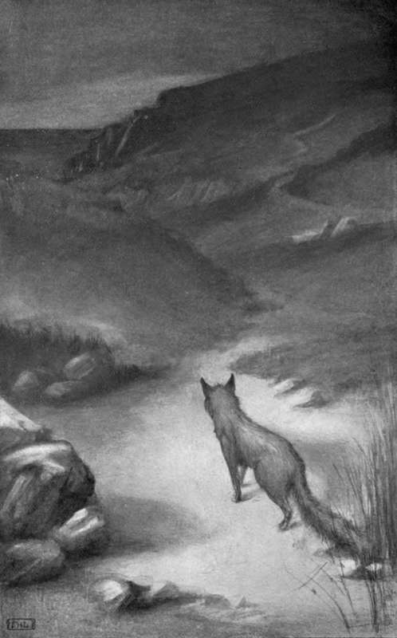

A Cry Of The Night. Part 3
Description
This section is from the book "Creatures Of The Night: A Book Of Wild Life In Western Britain", by Alfred W. Rees. Also available from Amazon: Creatures Of The Night: A Book Of Wild Life In Western Britain.
A Cry Of The Night. Part 3
While roaming abroad in the summer night, Vulp gradually became acquainted with all sorts of vermin-traps used by the keepers. Once, treading on a soft spot near a rabbit "creep," he suddenly felt a slight movement beneath his feet. Springing back, he almost managed to clear the trap; but the sharp steel teeth caught him by a single claw and for a moment held him fast. He wrenched himself loose, and retired for a while to examine his damaged toe-nail. Then, reassured, he again approached the trap, so that he might store up in memory the circumstances of his near escape. He learned his lesson thoroughly, and never afterwards did the smell of iron, or the slightest taint of the trapper's hand, escape him. He even walked around molehills; they reminded him too much of the soft soil about the trap. And, for the same reason, he avoided treading on freshly excavated earth before the holes of a rabbit warren.
The succeeding years of Vulp's eventful life were in many respects similar to the year that began with his courtship of the sleek young vixen in the white wilderness of the winter fields. His fear of men and hounds increased, while his cunning became greater with every passing day. He never slept on a straight trail, but cast about, returned on the line of his scent, and leaped aside, before retiring to sleep in his retreat amid the bracken. Often he heard the wild, ominous cry of the huntsman, " Eloa-in-hoick, hoick-hoick, cover - hoick!" as the hounds dashed into the furze; and the loud " Tally-ho!" as he himself, or, perchance, a less fortunate neighbour, broke into sight before the loud - tongued pack. And more than once, from a safe distance, he heard the awful " Whoop! " that proclaimed the death of one of his kindred.
As the years wore on, Vulp gradually wandered far from his old home. The countryside, for twenty or thirty miles around, was known as intimately to him as a little garden, nestling between sunny fruit-tree walls, is known to the cottager who makes it the object of his daily care. His ears were torn by thorns and fighting; his russet coat was streaked with grey along the spine. At last, when age demanded ease and comparative safety from the long, hard chase over hill and dale, he retired to a rocky fastness on the wild west coast, and there, far above the leaping waves and dashing spray, lived his free, lonely life. And there he died.
It was a bright, hot day in July. Lying among the boulders on the shore, I watched through a field-glass the antics of some birds that wheeled and soared above the cliffs, when, to my surprise, I saw Vulp crawl slowly along a shelf of rock above a deep, dark cavern. His movements, somehow, appeared unnatural. Instead of crouching, with legs bent under him and brush curled gracefully about his "pads," to bask, his eyelids half-closed, in the sun, he lay on his side. Guided by a companion, who, with waving hand, directed my course as I climbed, I gradually mounted the steep ascent, and peeped over the edge of the rock on which the fox lay. Despite my excessive caution, he was aware of my presence. Slowly and drowsily he lifted his head, uttered a feeble half-grunt, half-whine of alarm, and for a moment bared his teeth defiantly. I remained absolutely still. Then his head fell back, and with a tremor of pain he stretched a stiffened limb. I crawled across the ledge to a rugged path among the cliffs, and descended to the shore. Next day I found him on the rock again, lying in the same position, but dead, while far up in the blue the sea-birds circled and called, and far below, at the edge of the flowing tide, the crested billows leaped and sang.
"HE RETIRED TO A ROCKY FASTNESS ON THE WILD WEST COAST".
[To face p. 238].
His " mask" hangs above my study door.
It has been placed there—not as a thing of beauty. The hard, set pose devoid of grace, the bent, dried ears once ever on the alert, the glassy, artificial eyes in sockets once tenanted by living balls of fire that glowed in the darkness of the night—all are unreal and expressionless. Yet the "mask" suggests a hundred pictures, and when I turn aside and forget for a moment the unreality of this poor image of death, I wander, led by fancy, among the moonlit woods, where the red mouse rustles past, and the mournful cry of the brown owl floats through the beeches' shadowed aisles. Then I hear a sudden wail, that echoes from hillside to hillside, as the vixen calls to Vulp: "The night is white; man is asleep; I hunt alone!" And the fox, standing at the edge of the clearing, sends back his sharp, glad answer, " I come ! ".
Continue to: